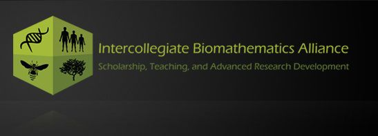
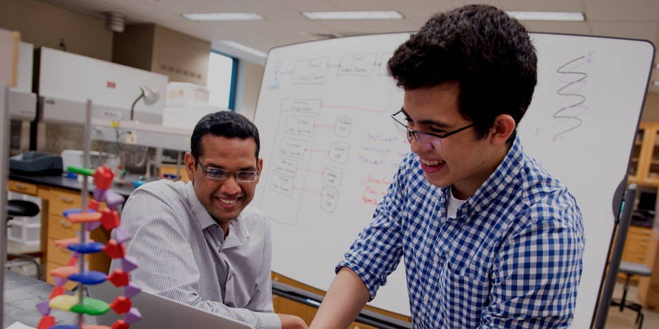
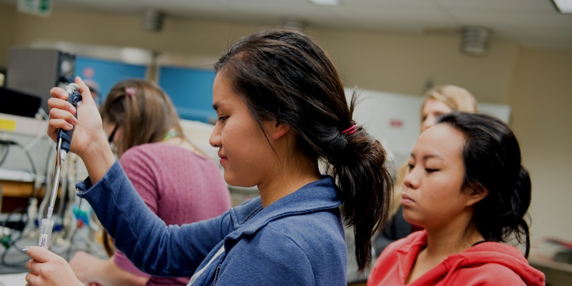

for the Advancement of Scholarship, Teaching, and Research in Mathematical Biology
The Intercollegiate Biomathematics Alliance (IBA) is a consortium created to promote research and education in biomathematics. With IBA, we strive to bring together institutions both academic and non-academic to form a collaborative community in the pursuit of advancing biomathematics, ecology, and related areas for the researchers, educators of the mathematical and biological sciences, and active scholars. In doing so, we provide a wide range of expertise, resources, and opportunities that are only available when we work together as a community.
Students enrolled at IBA member institutions also enjoy additional benefits that would not otherwise be available to them. For example, IBA offers undergraduate research workshops regularly, cross-institutional advisement for graduate students, and expanded course offerings among departments in IBA institutions.
Our logo contains four symbols: the strand of DNA, representing biomathematics and the common thread running through the skein of life; the bee, an embodiment of the unceasing, industrious quality of nature and the ubiquity of swarm behavior; the humans linking hands in a gesture of collaboration while also giving a subtle nod to the importance of agent-based modeling; and the tree, a classical symbol of ecology, for whom the budding of a new leaf is the addition of yet another scientific organization to the IBA consortium. Finally, the cube itself presents a structure which transforms disparate components into a unified whole, one whose green color is a more overt nod to the theme of environmental responsibility that so thoroughly permeates our mission.